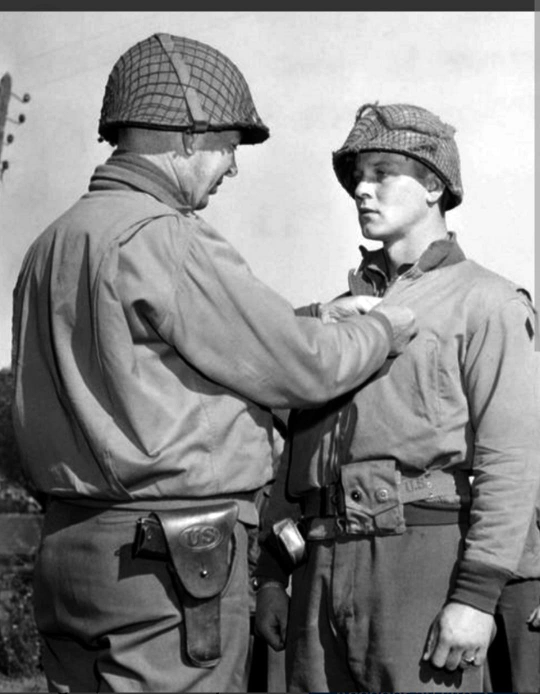
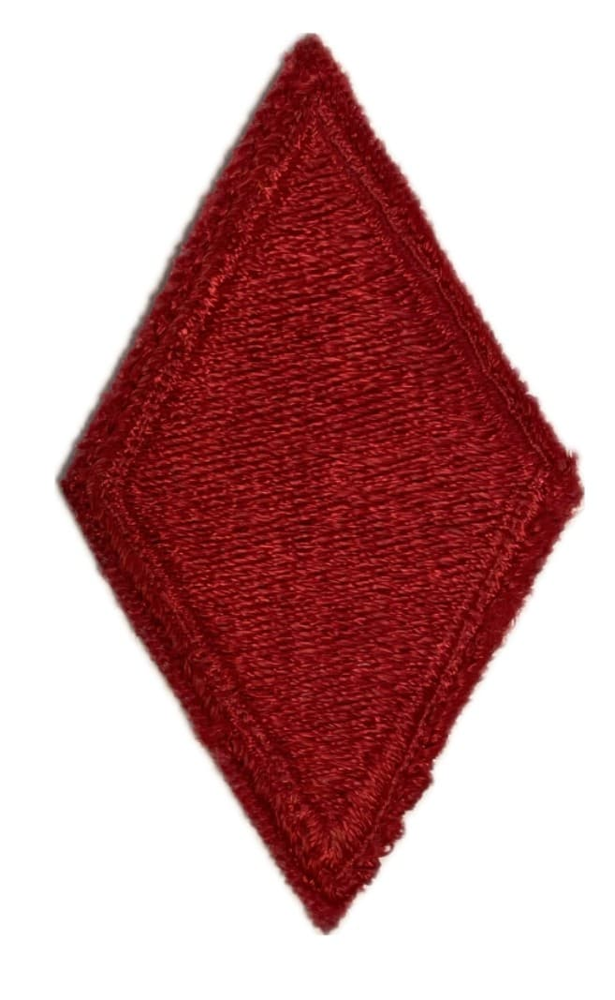
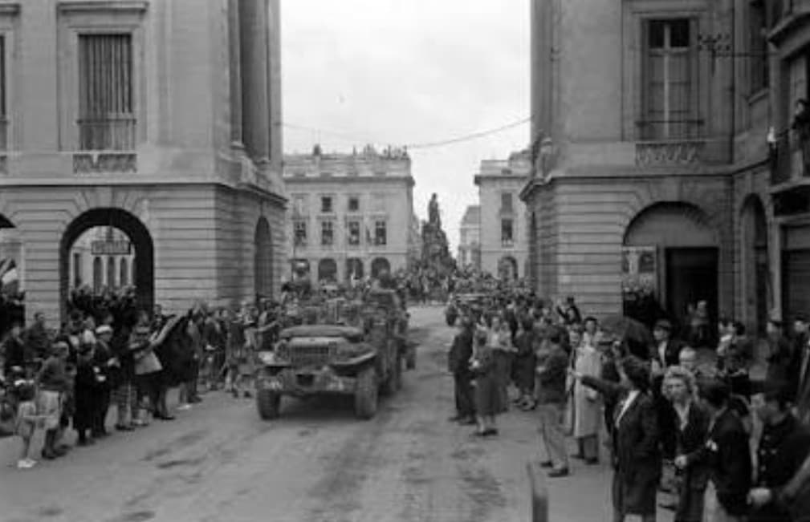
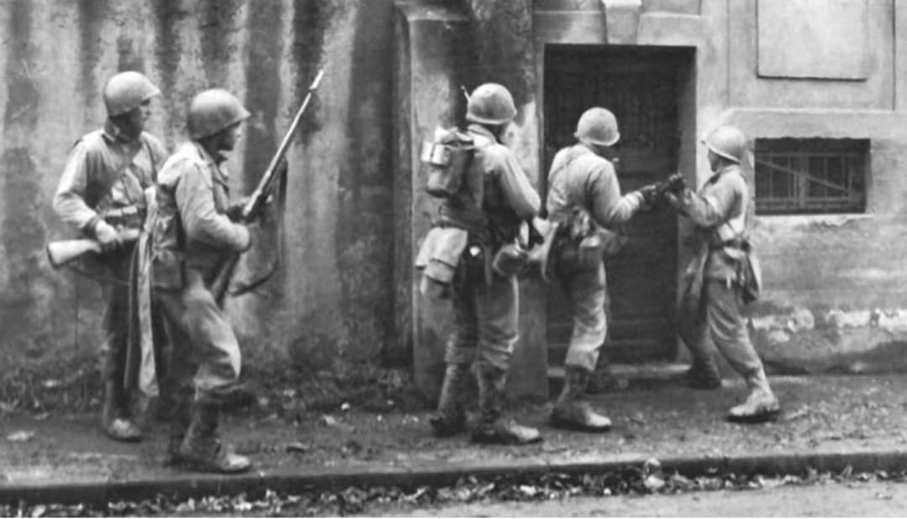

Les « Diables Rouges » du général Patton, héros de la sanglante bataille de Metz et de la Moselle

La 5th Infantry Division de l'armée américaine, surnommée les “Red Devils” (Les Diables Rouges) ou “Red Diamond”, est l'une des unités d'infanterie les plus coriaces de la IIIe Armée du général George S. Patton.
Débarquée en Normandie en juillet 1944, elle s'est particulièrement illustrée lors du franchissement héroïque de la Moselle et pendant la terrible bataille de Metz, avant d'être précipitée dans le flanc sud de la bataille des Ardennes.
Créée en décembre 1917 durant la Première Guerre mondiale, la division choisit comme insigne un diamant rouge (un losange). La couleur rouge symbolise le courage, tandis que la forme rappelle le carreau du jeu de cartes.
Lors des combats de la Première Guerre mondiale en France, la féroce résistance des soldats américains pousse les troupes allemandes à les surnommer « Die Roten Teufel » (Les Diables Rouges). La division conservera ce surnom avec fierté durant toute la Seconde Guerre mondiale.

Arrivée en Normandie le 9 juillet 1944 sur Utah Beach, la 5th Infantry Division s'engage immédiatement dans la guerre des haies au sud de Saint-Lô.
Rattachée à la IIIe Armée de Patton, elle participe activement à la percée de l'Opération Cobra, fonce vers Chartres, libère Orléans le 16 août et sécurise les têtes de pont sur la Seine et la Marne, devançant la retraite des forces allemandes vers l'est.

En septembre 1944, la division butté sur la ligne défensive allemande en Lorraine. Le franchissement de la Moselle à **Dornot** et **Arnaville** donne lieu à des combats d'une brutalité extrême sous un feu d'artillerie dévastateur.
De septembre à novembre 1944, les « Diables Rouges » mènent le siège éprouvant de la **forteresse de Metz**, réputée imprenable. Réduisant un à un les forts de la ceinture extérieure (fort Driant, fort Jeanne d'Arc), la 5th Division force la capitulation de la ville le 22 novembre 1944.

En décembre 1944, alors qu'elle s'apprête à attaquer la Sarre, la division est réorientée vers le nord sur ordre de Patton pour parer l'offensive allemande des Ardennes. Elle combat avec hargne dans la neige au Luxembourg pour dégager le flanc sud de la percée.
En 1945, la 5th Division franchit le Rhin à Oppenheim, participe à l'encerclement de la poche de la Ruhr, puis s'enfonce en Bavière jusqu'en Tchécoslovaquie où elle termine la guerre en mai 1945.
En 270 jours de combats acharnés en Europe, la 5th Infantry Division enregistre plus de **12 800 pertes** (dont environ 2 080 tués au combat).
Trois de ses membres ont reçu la Medal of Honor pour leurs actes de bravoure. La mémoire des « Diables Rouges » reste particulièrement honorée en Lorraine et au Luxembourg.
Page du Musée HOP WW2 – Section États-Unis & Unités d'Élite